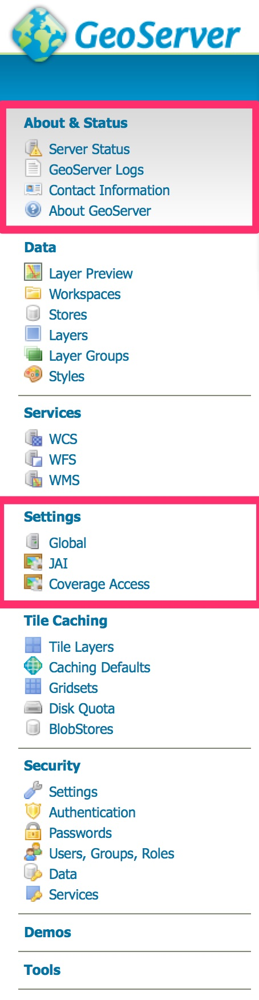
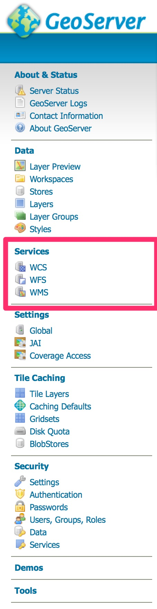
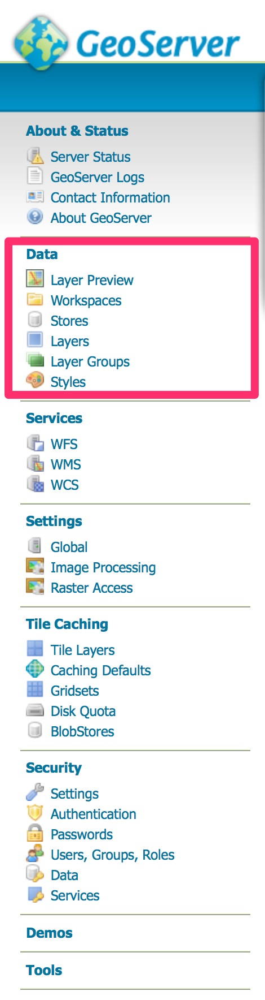
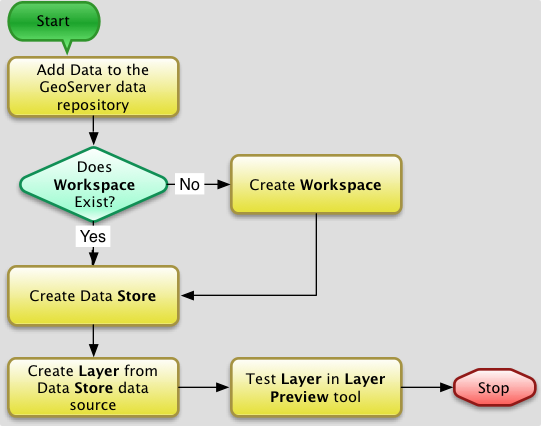
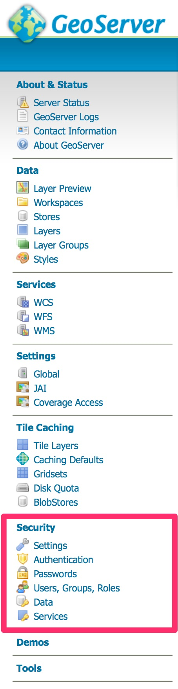

Week 13 - Module 5 - Platforms and GeoServer Introduction
Overview
SOA Review
Server Platform
Online Mapping Server Applications: COTS & Open Source
What is GeoServer
Working with GeoServer
Demonstration
SOA Review
SOA Illustration
Services Oriented Architecture (SOA) for Geospatial Data and Processing
Data, Processing & Client Tiers
Open Geospatial Consortium Interoperability Standards
WMS, WFS, WCS
Geospatial Metadata Standards
ISO 19115, FGDC
Internet Standards
Web: HTML, CSS, JavaScript, XML
SOAP - Simple Object Access Protocol
REST - Representation State Transformation
Server Platform
In the context of server platforms for online mapping with OGC services, there are several components that are of interest
The operating system - the software environment in which all applications on a computer operate (e.g. Windows, Mac OS X, Linux)
The web server - the application that listens for incoming requests from the Internet (e.g. Apache, IIS)
The mapping server - the application (that may also include the web server) that enables online mapping applications, that may include support for one or more OGC service interfaces (e.g. GeoServer, MapServer, CubeWerx, ArcGIS Server)
After the initial setup as part of the installation process, other setup and configuration is performed through the web interface
All configuration activities require that you are logged in as an administrator
Default username and password for a new GeoServer are admin:geoserver - this should be changed as soon as you start up a new server instance.
After logging in you can view and modify the configuration of the server and services - some of the configuration elements inform the OGC service capabilities
Server Configuration Options
Geoserver Configuration Menu
Server Status - summary information about the status of the currently running server
GeoServer Logs - access to the application logs for diagnosing issues with the server
Contact Information - contact information for the person responsible for providing support for the server and services. This information is used to build parts of the Capabilities XML metadata returned by the services
About GeoServer - links to information about GeoServer
Image Processing - advanced image processing and raster encoding
Raster Access - settings for accessing raster data
WxS Service Configuration Options
Geoserver Service Configuration Menu
Options Common to all WxS services
Enable/disable the service, with or without strict CITE compliance
Maintainer and Online Resource URLs
Title/Abstract
Fees/Access Constraints
Keywords
Options specific to individual services
WFS - max. no. features, service type (basic/transactional/complete), GML-specific styles, SRS styes, other options
WMS - SRS subset specification, interpolation method, resource consumption limits, KML options, map image watermarking, PNG/JPEG/SVG format options, and others
WCS - SRS subset specification, policies for overviews to be used, subsampling, and resource consumption limits, other options
Data Component Configuration Options
GeoServer Data Configuration Menu
Layer Preview - An interface through which a Layers may be previewed in a variety of formats
Workspaces - Defined containers for related data products
Stores - Specific data sources (file or service based) with required data type and connection information provided in the Store configuration
Layers - Defined layers that are published by the server, with the layers based upon data provided by a Store, but with additional layer-specific settings (such as bounding box, applied and available styles,and attribution).
Layer Groups - Collections of Layers for specific projects/applications or other logical groupings.
Styles - A listing of defined layer styles for the server through which those styles may be accessed and managed.
Data Integration Process
Data integration workflow
Security Settings
GeoServer Security Configuration Menu
Settings - Basic security configuration settings: role service, encryption options
Authentication - Configuration settings for authentication providers for users
Passwords - Settings related to underlying password providers and policies
Users, Groups, Roles - Management of system users, groups and defined roles
Data - Settings for read/write access to data products within the server, settings for the system's catalog mode
Service - Settings for managing service-level (i.e. WMS, WFS, WCS and related request types) access privileges by user role.